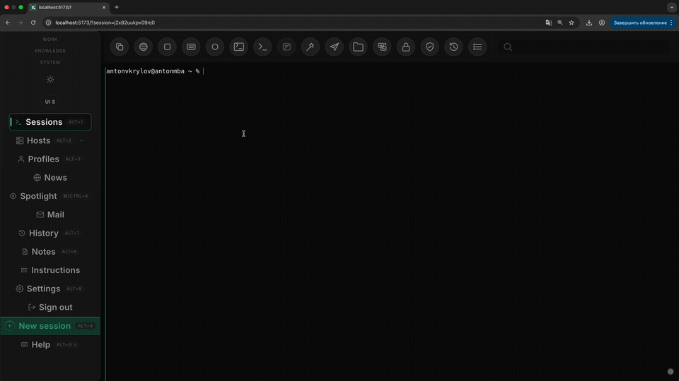
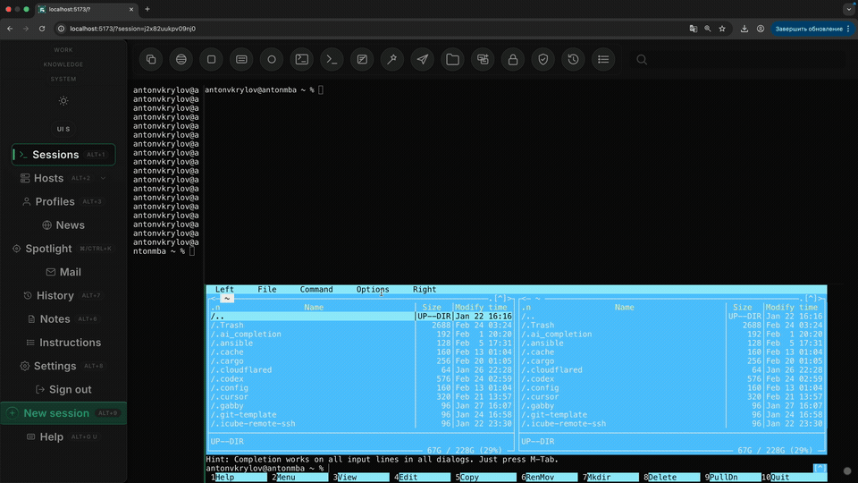
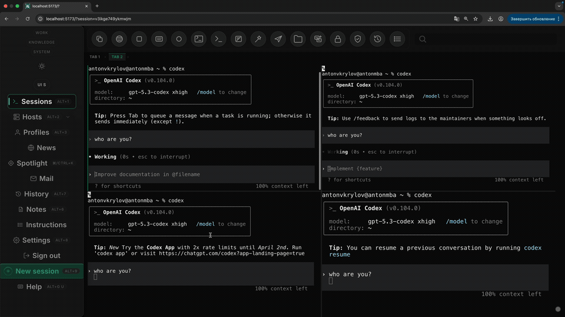
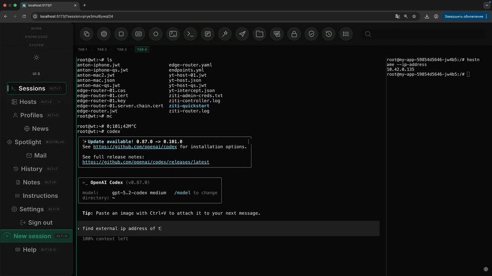
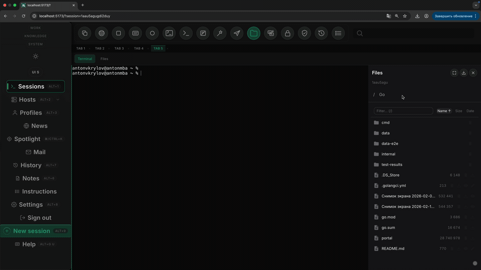
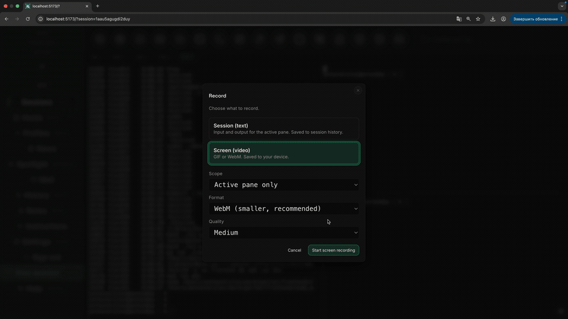
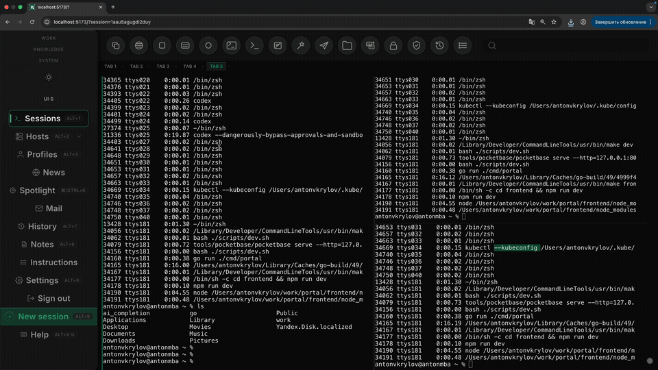

Portal Browser Tmux at Web Scale
The future of AI work is in the browser, not in another heavy native shell. Portal takes tmux-like behavior into a browser workspace so panes, tabs, logs, file views, SSH sessions, Kubernetes targets, and agent surfaces scale past the usual desktop terminal stack.
Native terminals are great until the workload stops fitting in one window. Once I am juggling multiple SSH hosts, Kubernetes sessions, agents, logs, shells, and scratch context at the same time, the speed limit is no longer text rendering. The speed limit becomes the desktop itself.
Portal takes the part people like about tmux, cheap panes and durable layouts, and moves it
into the browser. I can keep one workspace per task, preserve split layouts, and fan out into hundreds of
browser tabs without turning macOS into a graveyard of floating windows. Reopening a task is cheap. Sharing
or recovering that task is cheap too.



Why it feels faster than Warp, Ghostty, and iTerm
Warp, Ghostty, iTerm, and other native solutions are excellent terminal emulators. They are not especially good control planes. They optimize how one terminal feels. Portal optimizes how many live surfaces I can spawn, revisit, and reorganize without friction. Once work spans hosts, pods, agents, and long-running sessions, that matters more.
The browser surface also lets me mix terminals with file views, tables, sidebars, and agent controls inside
one durable layout. tmux cannot do that cleanly, and native apps usually push those functions
into separate windows. In practice, that feels faster: less tab hunting, less resize churn, less session
rebuild, more parallel work.
So the claim is not that HTML prints characters faster than a native renderer. The claim is that browser tmux scales better. When the job turns into fifty or a hundred concurrent surfaces, Portal stays operable in a way the usual terminal stack does not.
The future of AI is in the browser
I think the winning AI interface is not a heavy native app. It is a browser control plane. Native tools like Ghostty, Warp, iTerm, and the new crop of AI-wrapped terminals still inherit the same old shape: one machine, one window stack, one local app state model. They can feel polished, but they still make the operator pay a management tax in tabs, windows, installs, updates, and machine-specific setup.
A browser flips that model. Tabs are cheaper than native windows. Session restore is built in. Sharing is natural. Identity, auth, links, navigation, and incremental rollout already exist. That matters for AI systems because AI is rarely just "a better terminal." It is usually a mix of shells, logs, file views, tables, agent status, approvals, and history. The browser is better at composing those surfaces into one durable workspace than any native terminal app.
It also matches where the real work already lives: remote SSH nodes, Kubernetes clusters, browser-accessible dashboards, and distributed runtimes. Portal is stronger in the browser because the browser is already the natural front end for remote infrastructure. I can open the same workspace on another laptop, reconnect to the same SSH and Kubernetes targets, and keep operating without rebuilding local state from scratch. That is why this feels like the future to me. AI should be a networked workspace, not another beautiful local app.
The browser also gives you practical workflow features that native terminals never quite unify: easy screen recording for demos or async review, and multi-screen layouts that actually make sense. One display can hold the main Portal workspace, another can show docs, dashboards, or a second task tab, while the session model stays coherent. That makes AI work easier to explain, audit, and hand off.




Browser tabs are not the limitation here. The old limitation was trying to treat one native terminal window as the unit of work. Portal makes the workspace the unit instead.